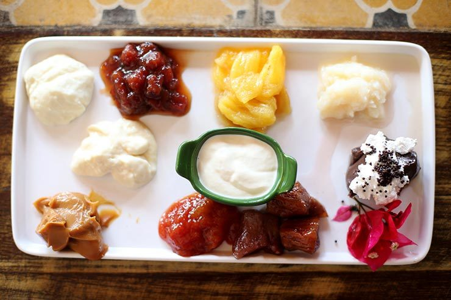
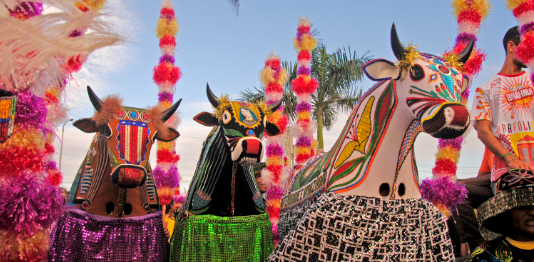
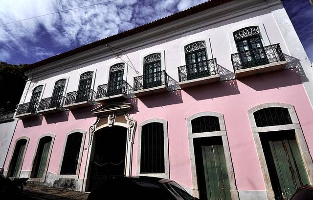

São Luís
São Luís, capital do estado do Maranhão, é uma cidade de grande importância histórica e cultural, conhecida por sua arquitetura colonial, diversidade cultural e gastronomia típica. A cidade, fundada pelos franceses em 1612 e posteriormente colonizada pelos portugueses, carrega um charme único, com seu centro histórico tombado como Patrimônio da Humanidade pela UNESCO. São Luís é também um dos principais destinos turísticos do Norte do Brasil, oferecendo aos visitantes uma rica experiência cultural, musical e culinária, com destaque para as tradições afro-brasileiras e a música popular local, como o bumba-meu-boi e o tambor de crioula.
Com praias exuberantes, como Lagoa do Junco e Praia do Calhau, e uma vibrante vida noturna, São Luís tem atraído turistas interessados tanto nas belezas naturais quanto na imersão cultural. Além disso, a cidade é o ponto de partida para explorar o Parque Nacional Lençóis Maranhenses, uma das maiores maravilhas naturais do Brasil. Em suma, São Luís se destaca como um destino turístico completo, oferecendo história, cultura, praias e uma culinária deliciosa.
Principais pontos turísticos
- Centro Histórico de São Luís
- Praia do Calhau
- Lagoa do Junco
- Igreja de São João Batista
- Praia do Amor
- Praia da Guia
- Ilha de Curupu
- Ilha do Medo
O Centro Histórico de São Luís é, sem dúvida, o maior atrativo turístico da cidade. Com suas ruas estreitas e sinuosas, o centro guarda um valioso patrimônio arquitetônico, com belos casarões coloniais, igrejas e praças que datam dos séculos XVII e XVIII. Entre os principais pontos estão o Palácio dos Leões, sede do governo do Maranhão, e a Igreja de São José de Ribamar, ambos exemplos da influência portuguesa na arquitetura da cidade.
A Praia do Calhau é uma das mais conhecidas e visitadas de São Luís. Sua areia fina e águas calmas atraem turistas que buscam relaxar e aproveitar o calor do clima tropical. A praia também é cercada por quiosques e bares que servem pratos típicos e frutos do mar frescos. É um ótimo lugar para passeios tranquilos e para desfrutar do pôr do sol.
A Lagoa do Junco é uma das principais atrações naturais de São Luís. Com suas águas cristalinas, é ideal para quem gosta de ecoturismo e esportes aquáticos, como o windsurf e o kite surf. A lagoa também é um ótimo local para passeios de barco, proporcionando uma visão única da natureza local.
A Igreja de São João Batista é uma das igrejas mais antigas de São Luís, datando do século XVIII. Sua arquitetura e decoração interna impressionam, e é uma das principais referências religiosas e turísticas da cidade. A igreja está localizada no centro histórico e tem grande importância para os católicos locais.
Um pouco mais afastada do centro da cidade, a praia do Amor é indicada para quem quer mais contato com a natureza e tranquilidade para curtir o mar. E, apesar da distância, é uma das melhores praias para visitar em São Luís. Como ela fica em uma área militar, tem acesso permitido apenas das 9h às 17h aos sábados, domingos e feriados. Lá o mar é calmo e a faixa de areia é extensa e repleta de rochas.
A praia da Guia tem um visual diferente das demais praias de São Luís. Em seu entorno, você verá manguezais, falésias avermelhadas e dunas altas. Além disso, suas águas são mais turvas, porém ótimas para banhos, sobretudo na maré baixa, quando é possível acessar suas piscinas naturais mar adentro. No canto esquerdo da praia, a faixa de areia é clara e tem muitas rochas, onde também se formam piscinas naturais na maré baixa.
Ainda em Raposa, você pode fazer um passeio de barco até a Ilha de Curupu. Lá encontrará algumas das melhores praias de São Luís, com piscinas naturais, dunas, florestas de manguezais, rio e vegetação preservada. Por isso, é perfeita para quem busca contato com a natureza ao viajar para a capital maranhense. No entanto, ao visitá-la leve o que comer e beber, pois não há nenhuma estrutura turística no local.
Famosa por suas piscinas naturais, formadas na maré baixa, a Ilha do Medo também tem praias perfeitas para quem procura tranquilidade. E não é só. A ilha abriga cavernas, rochas, dunas, falésias, áreas de mangue e trilhas. Portanto, é também um lugar para quem gosta de aventura em contato com a natureza.
Principais pontos gastronômicos
- Restaurante Cabana do Sol
- Localização: Calhau.
- Casa de Juja 
- Localização: Ponta da Areia.
- Cafofinho da Tia Dica
- Localização: Centro Histórico de São Luís.
- Almoço restaurante do Senac
- Localização: Centro Histórico de São Luís.

A Cabana do Sol é um dos restaurantes mais tradicionais de São Luís e um verdadeiro ícone da culinária maranhense. Com uma especialidade em frutos do mar e pratos típicos, como o arroz de cuxá (feito com arroz, camarão seco e molho de vinagreira), o restaurante oferece uma experiência gastronômica única, com um ambiente confortável e acolhedor.
O menu deste restaurante é recomendado para os amantes da culinária. Apresenta pratos de frutos do mar e carnes grelhadas em um ambiente descontraído. Mude o seu pedido de sempre e prove tamboril fascinante, um ótimo vatapá e caranguejos saborosos. O Restaurante Casa de Juja oferece boa caipiroska, boa michelada ou bom cordial. O serviço espetacular vai te dar uma boa sensação.
O restaurante apresenta boa decoração, de cores vibrantes, e ambiente acolhedor nesse lugar.
Aberto recentemente, é um dos restaurantes que vem se tornando cada vez mais conhecido na cidade, por aliar excelente gastronomia com um ambiente típico do Maranhão na região do centro histórico. A especialidade do Cafofinho da Tia Dica é o arroz do mar e os peixes da casa. É um ambiente bem familiar, que vale super a pena conhecer.
Um dos restaurantes mais bem conceituados da cidade, ele é uma verdadeira experiência gastronômica tanto para os clientes, quanto para os chefs. Isso porque quem cozinha por lá são os alunos que fazem estágio de gastronomia do curso do SENAC e servem o almoço em um esquema de Buffet. É como se eles estivessem em uma sala de aula real, mas não deixam nada a desejar; pelo contrário, os pratos são de primeiríssima.
O preço do buffet completo é acessível ao bolso de todos. Vale muito a pena conferir.
Principais pontos culturais
- Bumba-meu-boi 
- Localização: Por toda a cidade.
- Tambor de Crioula
- Localização: Por toda a cidade.
- Museu de Arte Sacra
- Localização: Centro de São Luís.
- Teatro Arthur Azevedo
- Localização: Centro de São Luís.
- Museu Histórico e Artístico do Maranhão 
- Localização: Centro de São Luís.
- Palácio dos Leões
- Localização: Centro de São Luís.
O Bumba-meu-boi é a festa mais importante e tradicional de São Luís e do Maranhão. Ela acontece principalmente no mês de junho, durante o São João, e mistura dança, música e teatro em uma grande celebração popular. A festa tem forte influência africana e indígena, com personagens típicos como o Boi e a Catirina, e é considerada Patrimônio Cultural Imaterial do Brasil.
O Tambor de Crioula é uma das manifestações culturais afro-brasileiras mais importantes de São Luís, também com grande destaque no período junino. Esse ritual de dança e música, realizado em círculos ao redor de tambores, é uma forma de celebração das raízes africanas da cidade. É uma das tradições mais autênticas e representativas do Maranhão.
O Museu de Arte Sacra de São Luís abriga uma coleção valiosa de arte religiosa, com obras que datam do período colonial até o século XIX. O museu é um importante ponto para quem deseja conhecer mais sobre a história religiosa e artística do Maranhão, com uma coleção de alta relevância cultural.
O Teatro Arthur Azevedo é um dos espaços culturais mais importantes de São Luís e um dos teatros mais antigos do Brasil. Inaugurado em 1817, o teatro ainda preserva sua arquitetura neoclássica e é um palco para apresentações de peças de teatro, música e dança. Considerado um dos maiores patrimônios culturais da cidade, o teatro é um dos melhores lugares para quem deseja vivenciar a arte e a cultura de São Luís.
O Museu Histórico e Artístico do Maranhão, localizado no centro histórico, abriga um acervo que retrata a história da cidade e do estado. Com exposições de arte, objetos e documentos, o museu permite aos visitantes conhecer as tradições culturais, artísticas e históricas de São Luís. O prédio em si é um exemplo da arquitetura colonial e contribui para o charme histórico da cidade.
O Palácio dos Leões é outro símbolo da cidade e um dos maiores marcos da arquitetura colonial em São Luís. Construído no século XVII, o palácio é a sede do governo estadual e tem sido um local de eventos e decisões importantes ao longo da história. O Palácio dos Leões é aberto ao público para visitas guiadas, oferecendo uma visão interessante sobre a história política e administrativa do Maranhão.